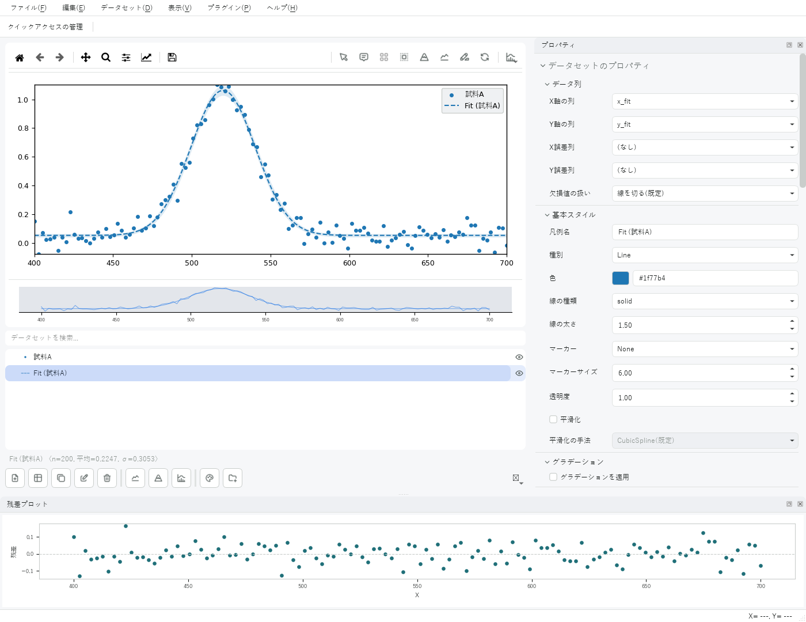
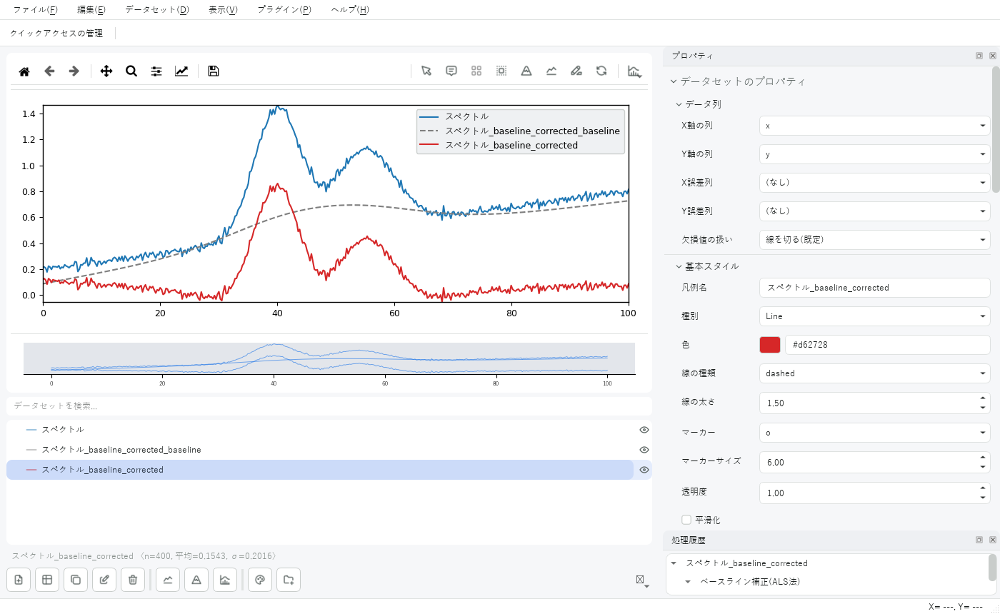
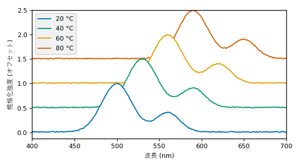
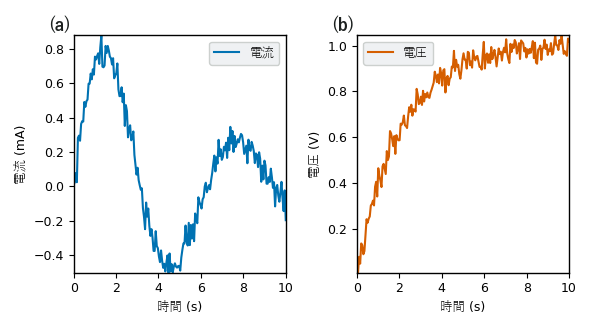
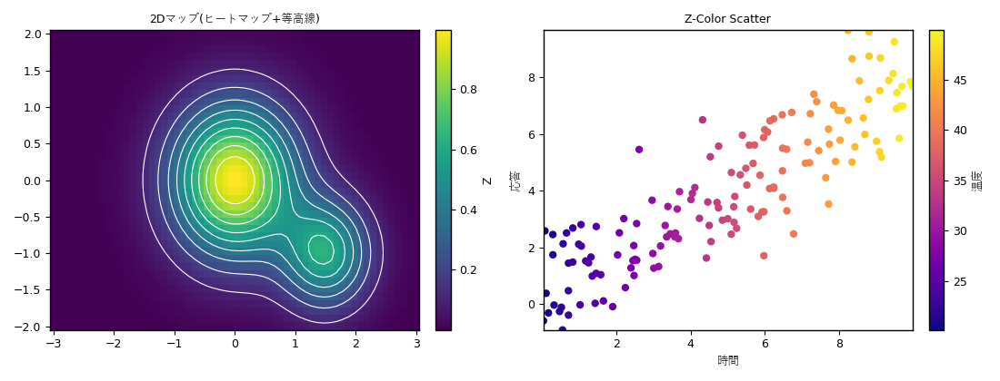
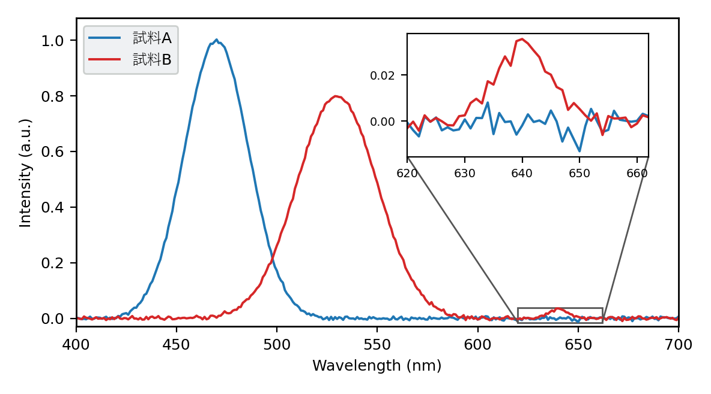

Graphica測定データから、論文に載せられるグラフを。
CSV や Excel のデータを読み込んで、グラフの見た目を細かく整え、そのまま画像や PDF に書き出せるデスクトップアプリです。曲線フィット、ピーク検出、ベースライン補正などの解析もアプリの中で完結します。
無料・オープンソース(MIT License)

Graphica でできること
実験や測定のデータを、表計算ソフトとグラフ作成ソフトを行き来せずにまとめられます。
読み込んですぐグラフに
CSV・TXT・Excel をドラッグ&ドロップするだけ。装置が書き出した、前後に測定条件の付いた TXT からも数値の表を見つけて読み込みます。
解析もアプリの中で
曲線フィット、ピーク検出、ベースライン補正、平滑化、積分、規格化。結果は新しいデータセットとして重ねて描け、Undo で戻せます。
論文の図に仕上げる
軸・目盛り・凡例・フォントを細かく調整し、PNG / PDF / SVG に書き出し。多パネル図、インセット、パネルラベル (a)(b) にも対応します。
無料で、拡張できる
MIT License のオープンソース。プラグインで、読み込める形式・フィットの式・専用のパネルを増やせます。
機能一覧
詳しい操作は、画面写真付きの Wiki(使い方マニュアル) にまとめています。
データの読み込みと編集
- CSV / TXT / Excel(.xlsx・.xls、複数シート)
- フォルダから一括読み込み、クリップボードから貼り付け
- 表の編集、列の計算(式やプリセット)、行フィルタ
- 外れ値をデータを消さずにマスク
グラフの種類と見た目
- 折れ線・散布図・面・棒・ステップ・密度散布図・値による配色
- ヒートマップと等高線(2D マップ)、ウォーターフォール表示
- エラーバー・誤差バンド、第2Y軸、単位を変換した第2X軸
- サブプロット、自由配置のレイアウト
データ処理
- 規格化、平滑化(Savitzky–Golay など)
- ベースライン補正、積分(区間・累積)、微分
- リサンプリング・補間、データセット間の演算
- 処理の履歴を記録し、論文の手法の文章に書き出し
曲線フィット
- ガウシアン・ローレンツ・指数関数・多項式など多数のモデル
- 自分で書いた式でのフィット、パラメータの固定と範囲指定
- 多峰フィット(ピーク分離)、一括フィット
- 標準誤差、信頼帯・予測帯、残差プロット
仕上げと書き出し
- テキスト・矢印の注釈、領域のハイライト、拡大図(インセット)
- 色覚の多様性に配慮した配色の確認(色覚シミュレーション)
- PNG / PDF / SVG、一括エクスポート、印刷
- 同じ図を描く Python スクリプト、HTML / PDF のレポート
画面と作例
どれも Graphica で作ったグラフです。






ダウンロード
最新版は Releases から入手できます。変更点は 変更履歴 にあります。
| 入れ方 | ファイル・コマンド | 備考 |
|---|---|---|
| Windows(インストーラー) | Graphica-…-setup.exe | 管理者権限なしで入れられます。プロジェクトファイル(.gra)をダブルクリックで開けるようになります。 |
| Windows(zip) | Graphica-windows.zip | 展開して Graphica.exe を実行します。インストールは不要です。 |
| macOS | Graphica-macos.zip | Apple Silicon 向け。展開すると Graphica.app が出てきます。 |
| pip | pip install graphica-plot | Python 3.10 以上。起動コマンドは graphica です(PyPI)。 |
Graphica.app を右クリック(または Control キーを押しながらクリック)して「開く」を選んでください。はじめての方は、Wiki の はじめに で、最初のグラフを作るまでを順に試せます。
プラグイン
分野に合わせた機能を、zip ファイル1つで追加できます。どれも Graphica v2.0.0 以降で使えます。
インストールの流れ
- プラグインの zip ファイルを保存します(展開せずにそのまま使います)。
- Graphica で 編集 ▸ 環境設定 を開き、「プラグイン」タブの「プラグインをインストール...」で zip を選びます。
- Graphica を再起動します。
各プラグインの使い方は プラグイン一覧、自分でプラグインを作る方法は プラグイン開発ガイド にあります。
In English
Graphica is a free, open-source desktop app (Windows / macOS) for turning CSV and Excel measurement data into publication-quality plots. Curve fitting, peak detection, baseline correction, smoothing and integration are built in, and figures export to PNG, PDF and SVG. The interface is in Japanese, with an English option for the main window, menus and dialogs.
Download the latest release · pip install graphica-plot · README in English